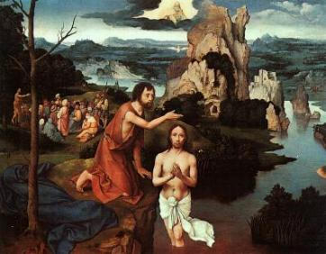
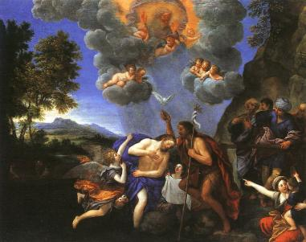
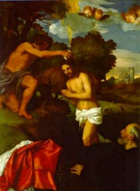
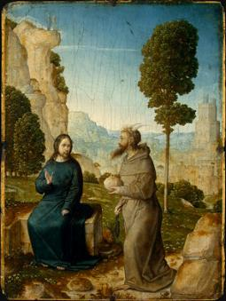
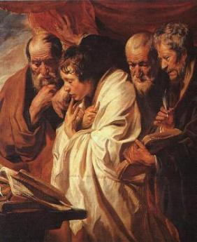
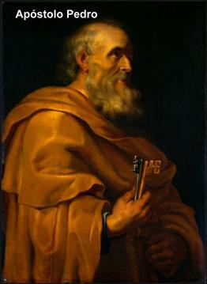

- O CRIADOR chamou José para a eternidade quando
JESUS completou 30 anos de idade, porque era o momento DELE
iniciar a Divina Missão.
- O CRIADOR chamou José para a eternidade quando
JESUS completou 30 anos de idade, porque era o momento DELE
iniciar a Divina Missão.
E assim aconteceu. O SENHOR deixou Nazaré e foi ao encontro de Batista, que batizava uma multidão de pessoas no rio Jordão, um “Batismo de Penitência” , preparando o povo a fim de que rezassem e fizessem penitência, para receberem dignamente o Messias.
JESUS o encontrou na Peréia, na Betânia Transjordana, ou seja, do outro lado do rio Jordão, próximo ao Mar Morto. Pediu ao Batista para batiza-LO:
“Mas João tentava dissuadi-lo, dizendo: Eu é que tenho necessidade de ser batizado por ti e tu vens a mim?" (Mt 3,14)
Em outras palavras, Batista quis dizer: você não tem pecado e quer receber um Batismo de Penitência?
Para se avaliar corretamente o teor do diálogo entre João Batista e JESUS, é necessário lembrar que os dois eram amigos desde criança e tinham um mútuo conhecimento íntimo. Todas as vezes que a Sagrada Família subia de Nazaré para Jerusalém, a fim de participar das celebrações judaicas, normalmente se hospedava na casa de Isabel e Zacarias, os pais do Batista e primos de Maria. Significa dizer que Batista além de ser primo de JESUS em 2º grau, era seu amigo e companheiro, fruto de uma convivência harmoniosa durante os anos da infância e juventude. Por isso com sua natural e cativante modéstia, mas tendo consciencia do sentido Divino do evento, o SENHOR respondeu ao Batista:
“Deixa estar por enquanto, pois assim nos convém cumprir toda a justiça”. (Mt 3,15)
Embora não tendo pecado, ELE quis se submeter ao batismo de João, porque sabia que se tratava de um acontecimento de acordo com à Vontade do CRIADOR, e que constituia na derradeira providência para a Sua entrada na era messiânica (ELE é o Messias prometido), e dessa maneira, satisfazer a “justiça” de DEUS que preside o desígnio da Salvação.
Então Batista consentiu e batizou-O.
ELE que não tinha nenhum pecado assumiu sobre si todos os pecados do mundo, e com aparência de um simples pecador, humildemente recebeu o Batismo de Penitência. E sendo batizado, concretizou com o seu gesto, uma demonstração de obediência ao PAI ETERNO e de amor a humanidade.
Depois de batizado, saiu da água e permaneceu em orações. Os Céus se abriram e o ESPÍRITO SANTO sob a forma de uma pequena pomba, desceu sobre ELE, ao mesmo tempo em que se ouviu uma voz vinda dos Céus:



“Este
é o Meu FILHO amado, em Quem me comprazo.” (no qual
coloquei toda a minha complacência) (Mt 3,17)

Aquele Mesmo, que humildemente como um simples pecador, foi imerso nas águas do Jordão para ser batizado, delas saiu glorificado, ungido e testemunhado pelo ESPÍRITO SANTO e anunciado pelo PAI ETERNO.
João Batista vendo aquela cena compreendeu que JESUS era o Messias esperado. Sua surpresa aliou-se a uma grande satisfação, porque desde criança cultivava uma sincera relação de amizade com ELE e por isso, conhecia as excepcionais virtudes que ornavam o caráter e o espírito de JESUS. Agora também diversos fatos se esclareciam em sua mente, compreendendo muitas palavras e acontecimentos que lhe impressionaram e apontavam para o imenso mistério que envolvia o seu tão querido primo. E por todas estas razões, com o coração pulsando forte, repleto de amor, abraçou carinhosa e longamente o seu estimado e precioso amigo. Depois, JESUS com sua natural discrição despediu-se do Batista e conduzido pelo ESPÍRITO SANTO retirou-se para um local deserto, onde permaneceu por 40 dias jejuando e em orações, ocasião em que foi tentado pelo Demônio que tinha a pretensão de destruir sua fidelidade a DEUS. Assim que ELE despediu Satanás, foi consolado e servido pelos Santos Anjos.


- Deixando o deserto, o SENHOR agilizou providências para iniciar
a “Vida Pública”,
transferindo o domicílio de Nazaré para Cafarnaúm, onde se instalou e começou
a congregar os Discípulos, convidando aqueles que na continuidade dos meses,
preparou diligentemente para ajuda-LO na missão evangelizadora, e também,
para que acompanhando o Mestre, fossem reais testemunhas da Ressurreição
e continuadores de Sua Divina Obra.

Iniciou com disposição a pregação da Boa Nova, divulgando com ênfase a moral cristã, ensinando ao povo nas sinagogas, nas praças e vias públicas, interpretando com fidelidade os textos sagrados, deixando uma profunda admiração em todos olhares. E para comprovar a exatidão de seus ensinamentos, mostrando que dizia a Verdade e estava com DEUS, fez uma quantidade incontável de milagres: curando cegos, coxos, leprosos, aliviando os males do corpo e do espírito, restituindo a saúde a todas as pessoas que suplicavam e buscavam por ELE, chegando ao extremo de ressuscitar mortos, como ressuscitou a filha de Jairo, o filho da viúva de Naim e Lázaro, conforme está descrito de modo impressionante nas Sagradas Escrituras .
Apenas para testemunhar a Obra do SENHOR, a seguir apresentamos algumas importantes manifestações: